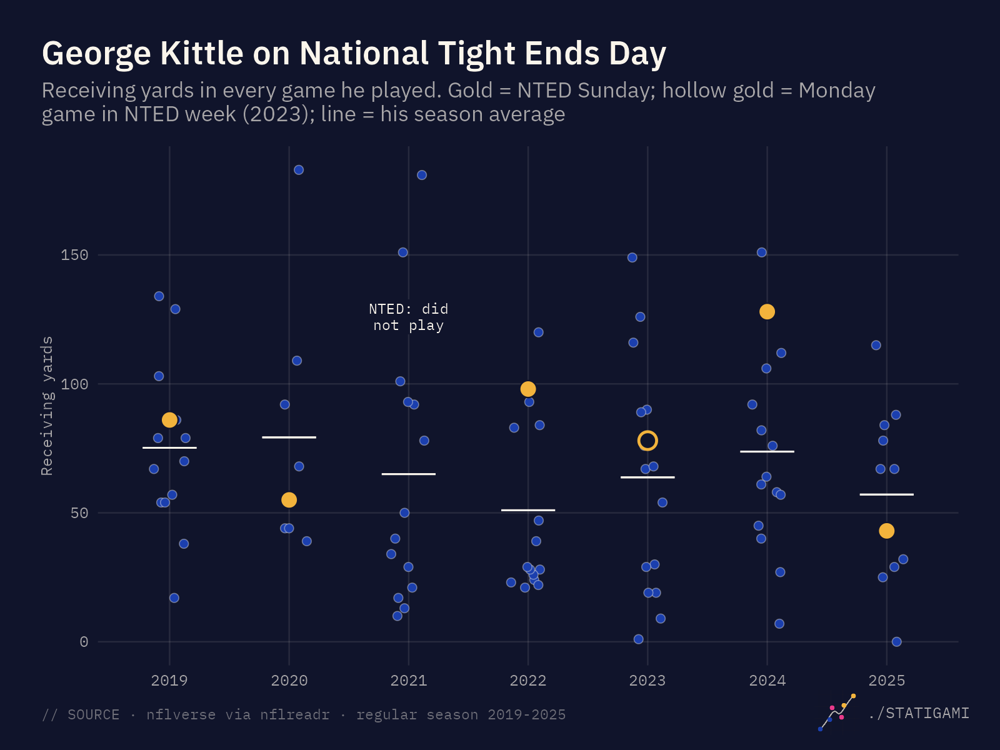

./STATIGAMI
Sports stats, folded into stories.
Data projects on the strange, surprising and unusual corners of sports, from a statistician who can't stop asking whether the numbers tell the same story.
// sports// stats// storytelling// Latest article
Every article starts with a question.
// LatestNFL · Oct 23, 2026 · 15 min
Do tight ends play better on National Tight Ends Day?
Seven seasons of data say the holiday doesn't change how teams use their tight ends. It has still produced some great games.
- // Seasons
- 2019–25
- // NTED games
- 84
- // Tight end games
- 493
- // Verdict
- Just another Sunday

// The number · from the latest article
+0.4pts
How much more teams threw to their tight ends on National Tight Ends Day.
Across 168 team games, the tight end share of targets was 0.4 points above each team's own baseline, with a 95% interval of −0.8 to +1.5. 51% of teams were above their usual: a coin flip.
// SOURCE · nflverse via nflreadr · regular season 2019–2025
// See how it was measured →No matching items